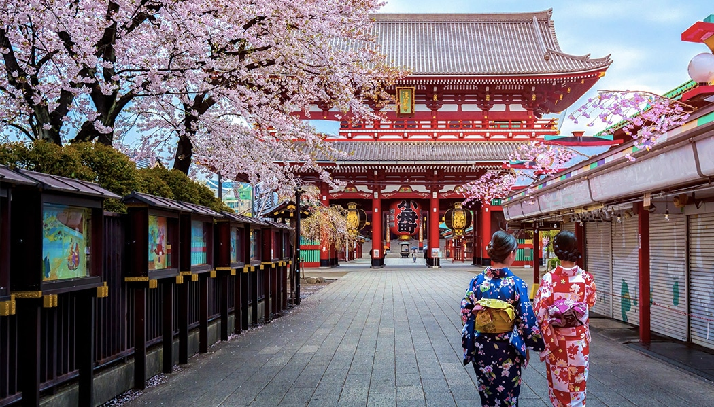
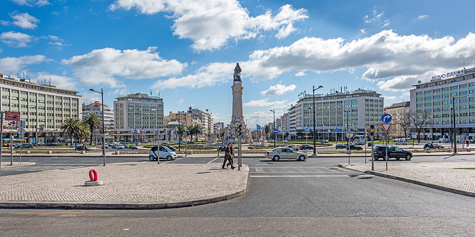
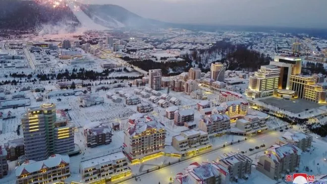
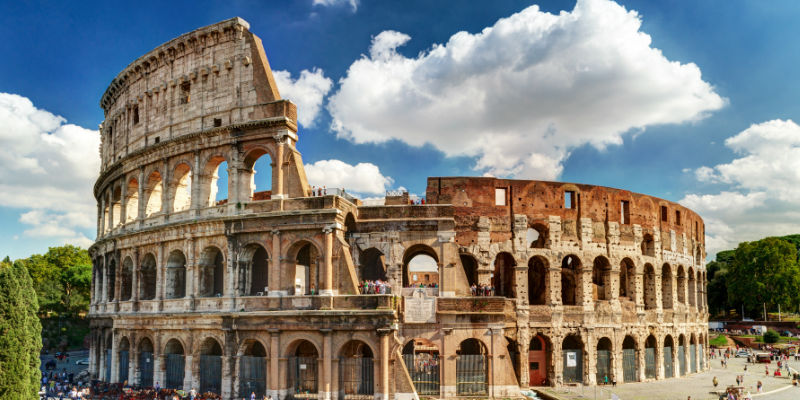
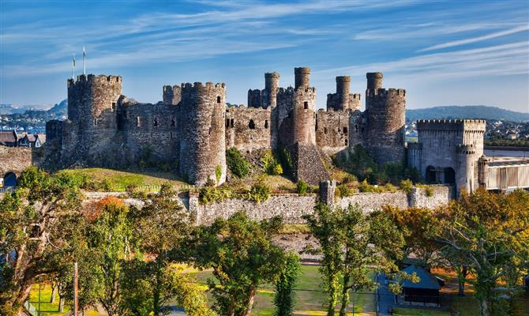
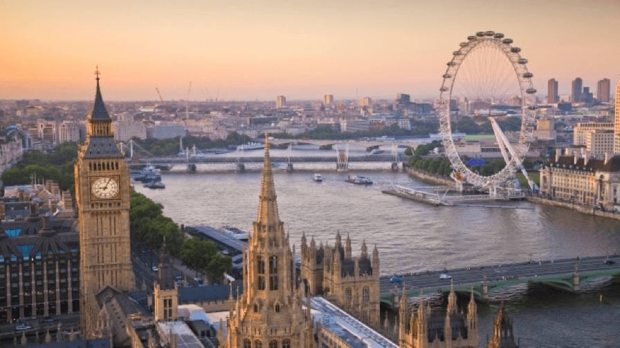
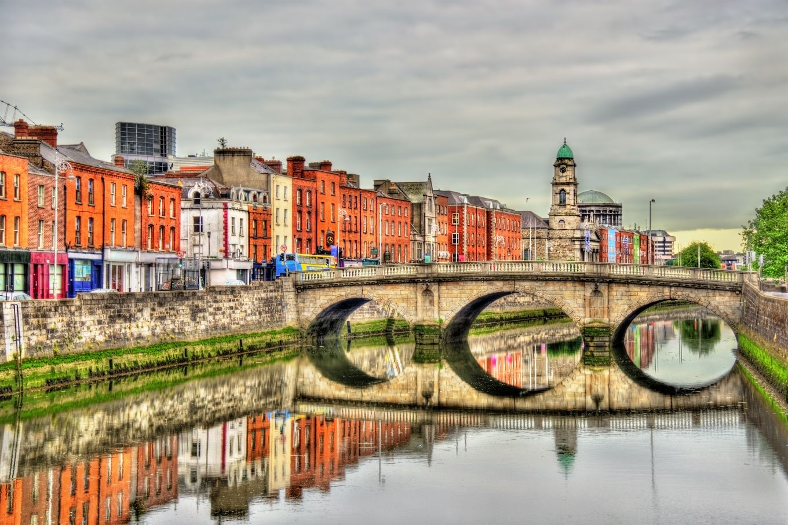
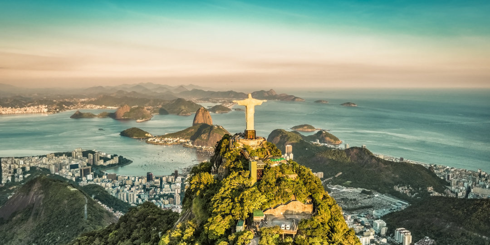

Paris

Paris, a capital da França, é uma importante cidade europeia e um centro mundial de arte, moda, gastronomia e cultura. Sua paisagem urbana do século XIX é cortada por avenidas largas e pelo rio Sena. A cidade é conhecida por monumentos como a Torre Eiffel e a Catedral de Notre-Dame, uma construção gótica do século XII, sendo famosa também pela cultura dos cafés e por lojas de estilistas famosos na Rue du Faubourg Saint-Honoré.
Saiba mais
Tóquio
Tóquio, a movimentada capital do Japão, combina o estilo ultramoderno com o tradicional, desde arranha-céus iluminados por neon a templos históricos. O opulento santuário xintoísta Meiji é conhecido por seu altíssimo portão e pelas florestas circundantes. O Palácio Imperial fica localizado em meio a jardins públicos. Os muitos museus da cidade oferecem exposições que variam de arte clássica (no Museu Nacional de Tóquio) a um teatro kabuki reconstruído (no Museu Edo-Tokyo).
Saiba mais
Lisboa
Lisboa é a capital de Portugal, situada na costa. Do imponente Castelo de São Jorge, a vista abrange as construções em tons pastel da cidade antiga, o estuário do Tejo e a Ponte 25 de Abril. Perto dali, o Museu Nacional do Azulejo exibe 5 séculos de azulejos decorativos. Nas proximidades de Lisboa, há uma sequência de praias do Atlântico, entre elas Cascais e Estoril.
Saiba maisAmsterdam

Amsterdã é a capital da Holanda, conhecida por seu patrimônio artístico, um elaborado sistema de canais e casas estreitas com telhados de duas águas, legados da era dourada do século XVII na cidade. O bairro de museus abriga o Museu Van Gogh, o Rijksmuseum, com obras de Rembrandt e Vermeer, e o Stedelijk, que privilegia a arte moderna. O ciclismo é uma característica essencial da cidade, que tem grande quantidade de ciclovias.
Saiba mais
Samjiyon
O Condado de Samjiyon é um kun, ou condado, na província de Ryanggang, Coreia do Norte. O nome deriva de três lagos do condado, conhecidos coletivamente como Lago Samji.
Saiba mais
Roma
Roma, a capital da Itália, é uma cidade cosmopolita, enorme, com quase 3.000 anos de arte, arquitetura e cultura influentes no mundo todo e à mostra. Ruínas antigas como o Fórum e o Coliseu evocam o poder do antigo Império Romano. A Cidade do Vaticano, sede da Igreja Católica Romana, tem a Basílica de São Pedro e os museus do Vaticano, que abrigam obras-primas como os afrescos da Capela Sistina de Michelângelo.
Saiba mais
País de Gales
O País de Gales é um país no sudoeste da Grã-Bretanha conhecido pelo litoral acidentado, pelos parques nacionais montanhosos, pela diferenciada língua galesa e pela cultura celta. Cardiff, a capital, é uma refinada cidade costeira com uma vida noturna animada e um castelo medieval com interiores neogóticos ornamentados. No noroeste, o Parque Nacional de Snowdonia tem lagos, acidentes geográficos glaciais, trilhas para caminhada e uma ferrovia que segue até o pico da montanha Snowdon.
Saiba mais
Londres
Londres, capital da Inglaterra e do Reino Unido, é uma cidade do século 21 com uma história que remonta à era romana. Seu centro abriga as sedes imponentes do Parlamento, a famosa torre do relógio do Big Ben e a Abadia de Westminster, local de coroação dos monarcas britânicos. Do outro lado do rio Tâmisa, a roda gigante London Eye tem vista panorâmica do complexo cultural da margem sul e de toda a cidade.
Saiba mais
Irlanda
A República da Irlanda ocupa a maior parte da ilha da Irlanda, perto da costa da Inglaterra e do País de Gales. Sua capital, Dublin, é berço de escritores como Oscar Wilde e local de origem da cerveja Guinness. O Livro de Kells, do século 9, e outros manuscritos ilustrados estão em exposição na biblioteca da Universidade de Trinity, em Dublin. Apelidado de "Ilha Esmeralda" por sua paisagem exuberante, o país está repleto de castelos, como a construção medieval de Cahir.
Saiba mais
Rio de Janeiro
O Rio de Janeiro é uma grande cidade brasileira à beira-mar, famosa pelas praias de Copacabana e Ipanema, pela estátua de 38 metros de altura do Cristo Redentor, no topo do Corcovado, e pelo Pão de Açúcar, um pico de granito com teleféricos até seu cume. A cidade também é conhecida pelas grandes favelas. O empolgante Carnaval, com carros alegóricos, fantasias extravagantes e sambistas, é considerado o maior do mundo
Saiba mais